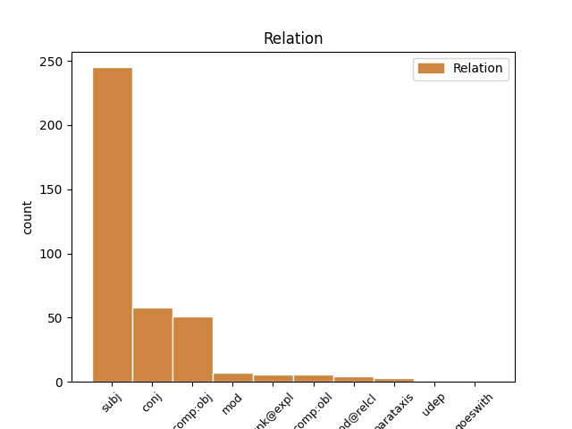
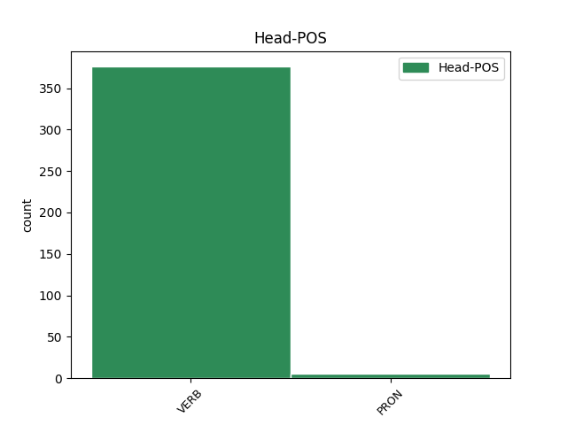
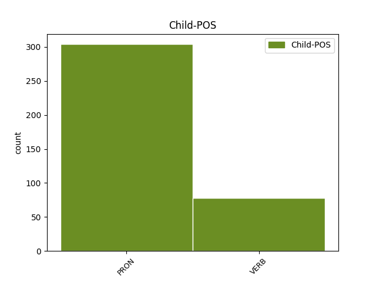

Distribution of features within this leaf



Agreement Rules sorted by frequency.
- When the dependent token is the subject(subj) of the head token, and the head token is VERB and the dependent token is PRON.
1 No _ _ _ _ 0 _ _ _
2 written _ _ _ _ 0 _ _ _
3 contemporary _ _ _ _ 0 _ _ _
4 description _ _ _ _ 0 _ _ _
5 of _ _ _ _ 0 _ _ _
6 Shakespeare _ _ _ _ 0 _ _ _
7 's _ _ _ _ 0 _ _ _
8 physical _ _ _ _ 0 _ _ _
9 appearance _ _ _ _ 0 _ _ _
10 survives _ _ _ _ 0 _ _ _
11 , _ _ _ _ 0 _ _ _
12 and _ _ _ _ 0 _ _ _
13 no _ _ _ _ 0 _ _ _
14 evidence _ _ _ _ 0 _ _ _
15 suggests _ _ _ _ 0 _ _ _
16 that _ _ _ _ 0 _ _ _
17 he he PRON PE Gender=Masc|Number=Sing|Person=3|PronType=Prs 19 subj _ _
18 ever _ _ _ _ 0 _ _ _
19 commissioned commission VERB V Mood=Ind|Person=3|Tense=Past|VerbForm=Fin 0 _ _ _
20 a _ _ _ _ 0 _ _ _
21 portrait _ _ _ _ 0 _ _ _
22 , _ _ _ _ 0 _ _ _
23 so _ _ _ _ 0 _ _ _
24 the _ _ _ _ 0 _ _ _
25 Droeshout _ _ _ _ 0 _ _ _
26 engraving _ _ _ _ 0 _ _ _
27 , _ _ _ _ 0 _ _ _
28 which _ _ _ _ 0 _ _ _
29 Ben _ _ _ _ 0 _ _ _
30 Jonson _ _ _ _ 0 _ _ _
31 approved _ _ _ _ 0 _ _ _
32 of _ _ _ _ 0 _ _ _
33 as _ _ _ _ 0 _ _ _
34 a _ _ _ _ 0 _ _ _
35 good _ _ _ _ 0 _ _ _
36 likeness _ _ _ _ 0 _ _ _
37 , _ _ _ _ 0 _ _ _
38 and _ _ _ _ 0 _ _ _
39 his _ _ _ _ 0 _ _ _
40 Stratford _ _ _ _ 0 _ _ _
41 monument _ _ _ _ 0 _ _ _
42 provide _ _ _ _ 0 _ _ _
43 the _ _ _ _ 0 _ _ _
44 best _ _ _ _ 0 _ _ _
45 evidence _ _ _ _ 0 _ _ _
46 of _ _ _ _ 0 _ _ _
47 his _ _ _ _ 0 _ _ _
48 appearance _ _ _ _ 0 _ _ _
49 . _ _ _ _ 0 _ _ _
1 No _ _ _ _ 0 _ _ _
2 written _ _ _ _ 0 _ _ _
3 contemporary _ _ _ _ 0 _ _ _
4 description _ _ _ _ 0 _ _ _
5 of _ _ _ _ 0 _ _ _
6 Shakespeare _ _ _ _ 0 _ _ _
7 's _ _ _ _ 0 _ _ _
8 physical _ _ _ _ 0 _ _ _
9 appearance _ _ _ _ 0 _ _ _
10 survives survive VERB V Mood=Ind|Number=Sing|Person=3|Tense=Pres|VerbForm=Fin 0 _ _ _
11 , _ _ _ _ 0 _ _ _
12 and _ _ _ _ 0 _ _ _
13 no _ _ _ _ 0 _ _ _
14 evidence _ _ _ _ 0 _ _ _
15 suggests suggest VERB V Mood=Ind|Number=Sing|Person=3|Tense=Pres|VerbForm=Fin 10 conj _ _
16 that _ _ _ _ 0 _ _ _
17 he _ _ _ _ 0 _ _ _
18 ever _ _ _ _ 0 _ _ _
19 commissioned _ _ _ _ 0 _ _ _
20 a _ _ _ _ 0 _ _ _
21 portrait _ _ _ _ 0 _ _ _
22 , _ _ _ _ 0 _ _ _
23 so _ _ _ _ 0 _ _ _
24 the _ _ _ _ 0 _ _ _
25 Droeshout _ _ _ _ 0 _ _ _
26 engraving _ _ _ _ 0 _ _ _
27 , _ _ _ _ 0 _ _ _
28 which _ _ _ _ 0 _ _ _
29 Ben _ _ _ _ 0 _ _ _
30 Jonson _ _ _ _ 0 _ _ _
31 approved _ _ _ _ 0 _ _ _
32 of _ _ _ _ 0 _ _ _
33 as _ _ _ _ 0 _ _ _
34 a _ _ _ _ 0 _ _ _
35 good _ _ _ _ 0 _ _ _
36 likeness _ _ _ _ 0 _ _ _
37 , _ _ _ _ 0 _ _ _
38 and _ _ _ _ 0 _ _ _
39 his _ _ _ _ 0 _ _ _
40 Stratford _ _ _ _ 0 _ _ _
41 monument _ _ _ _ 0 _ _ _
42 provide _ _ _ _ 0 _ _ _
43 the _ _ _ _ 0 _ _ _
44 best _ _ _ _ 0 _ _ _
45 evidence _ _ _ _ 0 _ _ _
46 of _ _ _ _ 0 _ _ _
47 his _ _ _ _ 0 _ _ _
48 appearance _ _ _ _ 0 _ _ _
49 . _ _ _ _ 0 _ _ _
1 The _ _ _ _ 0 _ _ _
2 poet _ _ _ _ 0 _ _ _
3 and _ _ _ _ 0 _ _ _
4 critic _ _ _ _ 0 _ _ _
5 T. _ _ _ _ 0 _ _ _
6 S. _ _ _ _ 0 _ _ _
7 Eliot _ _ _ _ 0 _ _ _
8 argued _ _ _ _ 0 _ _ _
9 against _ _ _ _ 0 _ _ _
10 Shaw _ _ _ _ 0 _ _ _
11 that _ _ _ _ 0 _ _ _
12 Shakespeare _ _ _ _ 0 _ _ _
13 's _ _ _ _ 0 _ _ _
14 " _ _ _ _ 0 _ _ _
15 primitiveness _ _ _ _ 0 _ _ _
16 " _ _ _ _ 0 _ _ _
17 in _ _ _ _ 0 _ _ _
18 fact _ _ _ _ 0 _ _ _
19 made make VERB V Mood=Ind|Person=3|Tense=Past|VerbForm=Fin 0 _ _ _
20 him he PRON PE Gender=Masc|Number=Sing|Person=3|PronType=Prs 19 comp:obj _ _
21 truly _ _ _ _ 0 _ _ _
22 modern _ _ _ _ 0 _ _ _
23 . _ _ _ _ 0 _ _ _
1 It it PRON PE Number=Sing|Person=3|PronType=Prs 2 unk@expl _ _
2 remains remain VERB V Mood=Ind|Number=Sing|Person=3|Tense=Pres|VerbForm=Fin 0 _ _ _
3 unclear _ _ _ _ 0 _ _ _
4 if _ _ _ _ 0 _ _ _
5 these _ _ _ _ 0 _ _ _
6 figures _ _ _ _ 0 _ _ _
7 represent _ _ _ _ 0 _ _ _
8 real _ _ _ _ 0 _ _ _
9 individuals _ _ _ _ 0 _ _ _
10 , _ _ _ _ 0 _ _ _
11 or _ _ _ _ 0 _ _ _
12 if _ _ _ _ 0 _ _ _
13 the _ _ _ _ 0 _ _ _
14 authorial _ _ _ _ 0 _ _ _
15 " _ _ _ _ 0 _ _ _
16 I _ _ _ _ 0 _ _ _
17 " _ _ _ _ 0 _ _ _
18 who _ _ _ _ 0 _ _ _
19 addresses _ _ _ _ 0 _ _ _
20 them _ _ _ _ 0 _ _ _
21 represents _ _ _ _ 0 _ _ _
22 Shakespeare _ _ _ _ 0 _ _ _
23 himself _ _ _ _ 0 _ _ _
24 , _ _ _ _ 0 _ _ _
25 though _ _ _ _ 0 _ _ _
26 Wordsworth _ _ _ _ 0 _ _ _
27 believed _ _ _ _ 0 _ _ _
28 that _ _ _ _ 0 _ _ _
29 with _ _ _ _ 0 _ _ _
30 the _ _ _ _ 0 _ _ _
31 sonnets _ _ _ _ 0 _ _ _
32 " _ _ _ _ 0 _ _ _
33 Shakespeare _ _ _ _ 0 _ _ _
34 unlocked _ _ _ _ 0 _ _ _
35 his _ _ _ _ 0 _ _ _
36 heart _ _ _ _ 0 _ _ _
37 " _ _ _ _ 0 _ _ _
38 . _ _ _ _ 0 _ _ _
1 The _ _ _ _ 0 _ _ _
2 next _ _ _ _ 0 _ _ _
3 day _ _ _ _ 0 _ _ _
4 , _ _ _ _ 0 _ _ _
5 two _ _ _ _ 0 _ _ _
6 of _ _ _ _ 0 _ _ _
7 Hathaway _ _ _ _ 0 _ _ _
8 's _ _ _ _ 0 _ _ _
9 neighbours _ _ _ _ 0 _ _ _
10 posted post VERB V Mood=Ind|Person=3|Tense=Past|VerbForm=Fin 0 _ _ _
11 bonds _ _ _ _ 0 _ _ _
12 guaranteeing guarantee VERB V Person=3|VerbForm=Ger 10 mod _ _
13 that _ _ _ _ 0 _ _ _
14 no _ _ _ _ 0 _ _ _
15 lawful _ _ _ _ 0 _ _ _
16 claims _ _ _ _ 0 _ _ _
17 impeded _ _ _ _ 0 _ _ _
18 the _ _ _ _ 0 _ _ _
19 marriage _ _ _ _ 0 _ _ _
20 . _ _ _ _ 0 _ _ _
1 Nevertheless _ _ _ _ 0 _ _ _
2 , _ _ _ _ 0 _ _ _
3 his _ _ _ _ 0 _ _ _
4 keen _ _ _ _ 0 _ _ _
5 insight _ _ _ _ 0 _ _ _
6 regarding _ _ _ _ 0 _ _ _
7 working-class _ _ _ _ 0 _ _ _
8 conditions _ _ _ _ 0 _ _ _
9 earned earn VERB V Mood=Ind|Person=3|Tense=Past|VerbForm=Fin 0 _ _ _
10 him he PRON PE Gender=Masc|Number=Sing|Person=3|PronType=Prs 9 comp:obl _ _
11 the _ _ _ _ 0 _ _ _
12 esteem _ _ _ _ 0 _ _ _
13 of _ _ _ _ 0 _ _ _
14 many _ _ _ _ 0 _ _ _
15 Socialists _ _ _ _ 0 _ _ _
16 and _ _ _ _ 0 _ _ _
17 Marxists _ _ _ _ 0 _ _ _
18 . _ _ _ _ 0 _ _ _
1 The _ _ _ _ 0 _ _ _
2 London _ _ _ _ 0 _ _ _
3 public _ _ _ _ 0 _ _ _
4 playhouses _ _ _ _ 0 _ _ _
5 were _ _ _ _ 0 _ _ _
6 repeatedly _ _ _ _ 0 _ _ _
7 closed _ _ _ _ 0 _ _ _
8 during _ _ _ _ 0 _ _ _
9 extended _ _ _ _ 0 _ _ _
10 outbreaks _ _ _ _ 0 _ _ _
11 of _ _ _ _ 0 _ _ _
12 the _ _ _ _ 0 _ _ _
13 plague _ _ _ _ 0 _ _ _
14 ( _ _ _ _ 0 _ _ _
15 a _ _ _ _ 0 _ _ _
16 total _ _ _ _ 0 _ _ _
17 of _ _ _ _ 0 _ _ _
18 over _ _ _ _ 0 _ _ _
19 60 _ _ _ _ 0 _ _ _
20 months _ _ _ _ 0 _ _ _
21 closure _ _ _ _ 0 _ _ _
22 between _ _ _ _ 0 _ _ _
23 May _ _ _ _ 0 _ _ _
24 1603 _ _ _ _ 0 _ _ _
25 and _ _ _ _ 0 _ _ _
26 February _ _ _ _ 0 _ _ _
27 1610 _ _ _ _ 0 _ _ _
28 ) _ _ _ _ 0 _ _ _
29 , _ _ _ _ 0 _ _ _
30 which _ _ _ _ 0 _ _ _
31 meant mean VERB V Mood=Ind|Person=3|Tense=Past|VerbForm=Fin 0 _ _ _
32 there _ _ _ _ 0 _ _ _
33 was be VERB V Mood=Ind|Number=Sing|Person=3|Tense=Past|VerbForm=Fin 31 comp:obj _ _
34 often _ _ _ _ 0 _ _ _
35 no _ _ _ _ 0 _ _ _
36 acting _ _ _ _ 0 _ _ _
37 work _ _ _ _ 0 _ _ _
38 . _ _ _ _ 0 _ _ _
1 " _ _ _ _ 0 _ _ _
2 What _ _ _ _ 0 _ _ _
3 Balzac _ _ _ _ 0 _ _ _
4 started _ _ _ _ 0 _ _ _
5 " _ _ _ _ 0 _ _ _
6 , _ _ _ _ 0 _ _ _
7 says say VERB V Mood=Ind|Number=Sing|Person=3|Tense=Pres|VerbForm=Fin 12 parataxis _ _
8 Lehan _ _ _ _ 0 _ _ _
9 , _ _ _ _ 0 _ _ _
10 " _ _ _ _ 0 _ _ _
11 Flaubert _ _ _ _ 0 _ _ _
12 helped help VERB V Mood=Ind|Person=3|Tense=Past|VerbForm=Fin 0 _ _ _
13 finish _ _ _ _ 0 _ _ _
14 . _ _ _ _ 0 _ _ _
1 After _ _ _ _ 0 _ _ _
2 all _ _ _ _ 0 _ _ _
3 , _ _ _ _ 0 _ _ _
4 the _ _ _ _ 0 _ _ _
5 volume _ _ _ _ 0 _ _ _
6 of _ _ _ _ 0 _ _ _
7 production _ _ _ _ 0 _ _ _
8 could _ _ _ _ 0 _ _ _
9 not _ _ _ _ 0 _ _ _
10 possibly _ _ _ _ 0 _ _ _
11 expand _ _ _ _ 0 _ _ _
12 enough _ _ _ _ 0 _ _ _
13 to _ _ _ _ 0 _ _ _
14 reemploy _ _ _ _ 0 _ _ _
15 everyone everyone PRON PE Number=Sing|Person=3|PronType=Prs 0 _ _ _
16 who _ _ _ _ 0 _ _ _
17 lost lose VERB V Mood=Ind|Person=3|Tense=Past|VerbForm=Fin 15 mod@relcl _ _
18 their _ _ _ _ 0 _ _ _
19 job _ _ _ _ 0 _ _ _
20 as _ _ _ _ 0 _ _ _
21 a _ _ _ _ 0 _ _ _
22 handloom _ _ _ _ 0 _ _ _
23 weaver _ _ _ _ 0 _ _ _
24 as _ _ _ _ 0 _ _ _
25 a _ _ _ _ 0 _ _ _
26 machine _ _ _ _ 0 _ _ _
27 - _ _ _ _ 0 _ _ _
28 minder _ _ _ _ 0 _ _ _
29 or _ _ _ _ 0 _ _ _
30 a _ _ _ _ 0 _ _ _
31 carpet _ _ _ _ 0 _ _ _
32 - _ _ _ _ 0 _ _ _
33 seller _ _ _ _ 0 _ _ _
34 , _ _ _ _ 0 _ _ _
35 could _ _ _ _ 0 _ _ _
36 it _ _ _ _ 0 _ _ _
37 ? _ _ _ _ 0 _ _ _
1 ( _ _ _ _ 0 _ _ _
2 1 _ _ _ _ 0 _ _ _
3 ) _ _ _ _ 0 _ _ _
4 Everyone everyone PRON PE Number=Sing|Person=3|PronType=Prs 0 _ _ _
5 charged charge VERB V Mood=Ind|Person=3|Tense=Past|VerbForm=Fin 4 mod _ _
6 with _ _ _ _ 0 _ _ _
7 a _ _ _ _ 0 _ _ _
8 penal _ _ _ _ 0 _ _ _
9 offence _ _ _ _ 0 _ _ _
10 has _ _ _ _ 0 _ _ _
11 the _ _ _ _ 0 _ _ _
12 right _ _ _ _ 0 _ _ _
13 to _ _ _ _ 0 _ _ _
14 be _ _ _ _ 0 _ _ _
15 presumed _ _ _ _ 0 _ _ _
16 innocent _ _ _ _ 0 _ _ _
17 until _ _ _ _ 0 _ _ _
18 proved _ _ _ _ 0 _ _ _
19 guilty _ _ _ _ 0 _ _ _
20 according _ _ _ _ 0 _ _ _
21 to _ _ _ _ 0 _ _ _
22 law _ _ _ _ 0 _ _ _
23 in _ _ _ _ 0 _ _ _
24 a _ _ _ _ 0 _ _ _
25 public _ _ _ _ 0 _ _ _
26 trial _ _ _ _ 0 _ _ _
27 at _ _ _ _ 0 _ _ _
28 which _ _ _ _ 0 _ _ _
29 he _ _ _ _ 0 _ _ _
30 has _ _ _ _ 0 _ _ _
31 had _ _ _ _ 0 _ _ _
32 all _ _ _ _ 0 _ _ _
33 the _ _ _ _ 0 _ _ _
34 guarantees _ _ _ _ 0 _ _ _
35 necessary _ _ _ _ 0 _ _ _
36 for _ _ _ _ 0 _ _ _
37 his _ _ _ _ 0 _ _ _
38 defence _ _ _ _ 0 _ _ _
39 . _ _ _ _ 0 _ _ _
1 In _ _ _ _ 0 _ _ _
2 1819 _ _ _ _ 0 _ _ _
3 Passez _ _ _ _ 0 _ _ _
4 offered _ _ _ _ 0 _ _ _
5 to _ _ _ _ 0 _ _ _
6 make _ _ _ _ 0 _ _ _
7 Balzac _ _ _ _ 0 _ _ _
8 his _ _ _ _ 0 _ _ _
9 successor _ _ _ _ 0 _ _ _
10 , _ _ _ _ 0 _ _ _
11 but _ _ _ _ 0 _ _ _
12 his _ _ _ _ 0 _ _ _
13 apprentice _ _ _ _ 0 _ _ _
14 h have VERB V Mood=Ind|Person=3|Tense=Past|VerbForm=Fin 0 _ _ _
15 ad have VERB V Mood=Ind|Person=3|Tense=Past|VerbForm=Fin 14 goeswith _ _
16 enough _ _ _ _ 0 _ _ _
17 of _ _ _ _ 0 _ _ _
18 the _ _ _ _ 0 _ _ _
19 law _ _ _ _ 0 _ _ _
20 . _ _ _ _ 0 _ _ _
1 " _ _ _ _ 0 _ _ _
2 He _ _ _ _ 0 _ _ _
3 also _ _ _ _ 0 _ _ _
4 used _ _ _ _ 0 _ _ _
5 a _ _ _ _ 0 _ _ _
6 realist _ _ _ _ 0 _ _ _
7 technique _ _ _ _ 0 _ _ _
8 which _ _ _ _ 0 _ _ _
9 French _ _ _ _ 0 _ _ _
10 novelist _ _ _ _ 0 _ _ _
11 Marcel _ _ _ _ 0 _ _ _
12 Proust _ _ _ _ 0 _ _ _
13 later _ _ _ _ 0 _ _ _
14 named _ _ _ _ 0 _ _ _
15 " _ _ _ _ 0 _ _ _
16 retrospective _ _ _ _ 0 _ _ _
17 illumination _ _ _ _ 0 _ _ _
18 " _ _ _ _ 0 _ _ _
19 , _ _ _ _ 0 _ _ _
20 whereby _ _ _ _ 0 _ _ _
21 a _ _ _ _ 0 _ _ _
22 character _ _ _ _ 0 _ _ _
23 's _ _ _ _ 0 _ _ _
24 past _ _ _ _ 0 _ _ _
25 is _ _ _ _ 0 _ _ _
26 revealed _ _ _ _ 0 _ _ _
27 long _ _ _ _ 0 _ _ _
28 after _ _ _ _ 0 _ _ _
29 she she PRON PE Gender=Fem|Number=Sing|Person=3|PronType=Prs 0 _ _ _
30 or _ _ _ _ 0 _ _ _
31 he he PRON PE Gender=Masc|Number=Sing|Person=3|PronType=Prs 29 conj _ _
32 first _ _ _ _ 0 _ _ _
33 appears _ _ _ _ 0 _ _ _
34 . _ _ _ _ 0 _ _ _
1 The _ _ _ _ 0 _ _ _
2 terms _ _ _ _ 0 _ _ _
3 instructed _ _ _ _ 0 _ _ _
4 that _ _ _ _ 0 _ _ _
5 she she PRON PE Gender=Fem|Number=Sing|Person=3|PronType=Prs 6 udep _ _
6 pass pass VERB V Mood=Ind|Number=Sing|Person=3|Tense=Pres|VerbForm=Fin 0 _ _ _
7 it _ _ _ _ 0 _ _ _
8 down _ _ _ _ 0 _ _ _
9 intact _ _ _ _ 0 _ _ _
10 to _ _ _ _ 0 _ _ _
11 " _ _ _ _ 0 _ _ _
12 the _ _ _ _ 0 _ _ _
13 first _ _ _ _ 0 _ _ _
14 son _ _ _ _ 0 _ _ _
15 of _ _ _ _ 0 _ _ _
16 her _ _ _ _ 0 _ _ _
17 body _ _ _ _ 0 _ _ _
18 " _ _ _ _ 0 _ _ _
19 . _ _ _ _ 0 _ _ _
Disagree Examples:
1 The _ _ _ _ 0 _ _ _
2 Licensor _ _ _ _ 0 _ _ _
3 grants grant VERB V Mood=Ind|Number=Sing|Person=3|Tense=Pres|VerbForm=Fin 0 _ _ _
4 You you PRON PE Person=2|PronType=Prs 3 comp:obl _ _
5 the _ _ _ _ 0 _ _ _
6 rights _ _ _ _ 0 _ _ _
7 contained _ _ _ _ 0 _ _ _
8 here _ _ _ _ 0 _ _ _
9 in _ _ _ _ 0 _ _ _
10 consideration _ _ _ _ 0 _ _ _
11 of _ _ _ _ 0 _ _ _
12 your _ _ _ _ 0 _ _ _
13 acceptance _ _ _ _ 0 _ _ _
14 of _ _ _ _ 0 _ _ _
15 such _ _ _ _ 0 _ _ _
16 terms _ _ _ _ 0 _ _ _
17 and _ _ _ _ 0 _ _ _
18 conditions _ _ _ _ 0 _ _ _
19 . _ _ _ _ 0 _ _ _
1 Subject _ _ _ _ 0 _ _ _
2 to _ _ _ _ 0 _ _ _
3 the _ _ _ _ 0 _ _ _
4 terms _ _ _ _ 0 _ _ _
5 and _ _ _ _ 0 _ _ _
6 conditions _ _ _ _ 0 _ _ _
7 of _ _ _ _ 0 _ _ _
8 this _ _ _ _ 0 _ _ _
9 License _ _ _ _ 0 _ _ _
10 , _ _ _ _ 0 _ _ _
11 Licensor _ _ _ _ 0 _ _ _
12 hereby _ _ _ _ 0 _ _ _
13 grants grant VERB V Mood=Ind|Number=Sing|Person=3|Tense=Pres|VerbForm=Fin 0 _ _ _
14 You you PRON PE Person=2|PronType=Prs 13 comp:obl _ _
15 a _ _ _ _ 0 _ _ _
16 worldwide _ _ _ _ 0 _ _ _
17 , _ _ _ _ 0 _ _ _
18 royalty _ _ _ _ 0 _ _ _
19 - _ _ _ _ 0 _ _ _
20 free _ _ _ _ 0 _ _ _
21 , _ _ _ _ 0 _ _ _
22 non _ _ _ _ 0 _ _ _
23 - _ _ _ _ 0 _ _ _
24 exclusive _ _ _ _ 0 _ _ _
25 , _ _ _ _ 0 _ _ _
26 perpetual _ _ _ _ 0 _ _ _
27 ( _ _ _ _ 0 _ _ _
28 for _ _ _ _ 0 _ _ _
29 the _ _ _ _ 0 _ _ _
30 duration _ _ _ _ 0 _ _ _
31 of _ _ _ _ 0 _ _ _
32 the _ _ _ _ 0 _ _ _
33 applicable _ _ _ _ 0 _ _ _
34 copyright _ _ _ _ 0 _ _ _
35 ) _ _ _ _ 0 _ _ _
36 license _ _ _ _ 0 _ _ _
37 to _ _ _ _ 0 _ _ _
38 exercise _ _ _ _ 0 _ _ _
39 the _ _ _ _ 0 _ _ _
40 rights _ _ _ _ 0 _ _ _
41 in _ _ _ _ 0 _ _ _
42 the _ _ _ _ 0 _ _ _
43 Work _ _ _ _ 0 _ _ _
44 as _ _ _ _ 0 _ _ _
45 stated _ _ _ _ 0 _ _ _
46 below _ _ _ _ 0 _ _ _
47 : _ _ _ _ 0 _ _ _
1 I _ _ _ _ 0 _ _ _
2 declare _ _ _ _ 0 _ _ _
3 resumed _ _ _ _ 0 _ _ _
4 the _ _ _ _ 0 _ _ _
5 session _ _ _ _ 0 _ _ _
6 of _ _ _ _ 0 _ _ _
7 the _ _ _ _ 0 _ _ _
8 European _ _ _ _ 0 _ _ _
9 Parliament _ _ _ _ 0 _ _ _
10 adjourned _ _ _ _ 0 _ _ _
11 on _ _ _ _ 0 _ _ _
12 Friday _ _ _ _ 0 _ _ _
13 17 _ _ _ _ 0 _ _ _
14 December _ _ _ _ 0 _ _ _
15 1999 _ _ _ _ 0 _ _ _
16 , _ _ _ _ 0 _ _ _
17 and _ _ _ _ 0 _ _ _
18 I _ _ _ _ 0 _ _ _
19 would _ _ _ _ 0 _ _ _
20 like _ _ _ _ 0 _ _ _
21 once _ _ _ _ 0 _ _ _
22 again _ _ _ _ 0 _ _ _
23 to _ _ _ _ 0 _ _ _
24 wish _ _ _ _ 0 _ _ _
25 you _ _ _ _ 0 _ _ _
26 a _ _ _ _ 0 _ _ _
27 happy _ _ _ _ 0 _ _ _
28 new _ _ _ _ 0 _ _ _
29 year _ _ _ _ 0 _ _ _
30 in _ _ _ _ 0 _ _ _
31 the _ _ _ _ 0 _ _ _
32 hope _ _ _ _ 0 _ _ _
33 that _ _ _ _ 0 _ _ _
34 you you PRON PE Person=2|PronType=Prs 35 subj _ _
35 enjoyed enjoy VERB V Mood=Ind|Person=3|Tense=Past|VerbForm=Fin 0 _ _ _
36 a _ _ _ _ 0 _ _ _
37 pleasant _ _ _ _ 0 _ _ _
38 festive _ _ _ _ 0 _ _ _
39 period _ _ _ _ 0 _ _ _
40 . _ _ _ _ 0 _ _ _
1 Madam _ _ _ _ 0 _ _ _
2 President _ _ _ _ 0 _ _ _
3 , _ _ _ _ 0 _ _ _
4 in _ _ _ _ 0 _ _ _
5 the _ _ _ _ 0 _ _ _
6 earlier _ _ _ _ 0 _ _ _
7 vote _ _ _ _ 0 _ _ _
8 - _ _ _ _ 0 _ _ _
9 and _ _ _ _ 0 _ _ _
10 I _ _ _ _ 0 _ _ _
11 will _ _ _ _ 0 _ _ _
12 abide _ _ _ _ 0 _ _ _
13 by _ _ _ _ 0 _ _ _
14 your _ _ _ _ 0 _ _ _
15 ruling _ _ _ _ 0 _ _ _
16 on _ _ _ _ 0 _ _ _
17 this _ _ _ _ 0 _ _ _
18 matter _ _ _ _ 0 _ _ _
19 - _ _ _ _ 0 _ _ _
20 on _ _ _ _ 0 _ _ _
21 the _ _ _ _ 0 _ _ _
22 question _ _ _ _ 0 _ _ _
23 of _ _ _ _ 0 _ _ _
24 the _ _ _ _ 0 _ _ _
25 strategic _ _ _ _ 0 _ _ _
26 plan _ _ _ _ 0 _ _ _
27 of _ _ _ _ 0 _ _ _
28 the _ _ _ _ 0 _ _ _
29 Commission _ _ _ _ 0 _ _ _
30 I I PRON PE Number=Sing|Person=1|PronType=Prs 31 subj _ _
31 indicated indicate VERB V Mood=Ind|Person=3|Tense=Past|VerbForm=Fin 0 _ _ _
32 that _ _ _ _ 0 _ _ _
33 I _ _ _ _ 0 _ _ _
34 would _ _ _ _ 0 _ _ _
35 like _ _ _ _ 0 _ _ _
36 to _ _ _ _ 0 _ _ _
37 speak _ _ _ _ 0 _ _ _
38 in _ _ _ _ 0 _ _ _
39 advance _ _ _ _ 0 _ _ _
40 of _ _ _ _ 0 _ _ _
41 the _ _ _ _ 0 _ _ _
42 vote _ _ _ _ 0 _ _ _
43 on _ _ _ _ 0 _ _ _
44 behalf _ _ _ _ 0 _ _ _
45 of _ _ _ _ 0 _ _ _
46 my _ _ _ _ 0 _ _ _
47 Group _ _ _ _ 0 _ _ _
48 . _ _ _ _ 0 _ _ _
1 I _ _ _ _ 0 _ _ _
2 congratulate congratulate VERB V Mood=Ind|Number=Sing|Person=1|Tense=Pres|VerbForm=Fin 0 _ _ _
3 him he PRON PE Gender=Masc|Number=Sing|Person=3|PronType=Prs 2 comp:obj _ _
4 on _ _ _ _ 0 _ _ _
5 his _ _ _ _ 0 _ _ _
6 excellent _ _ _ _ 0 _ _ _
7 report _ _ _ _ 0 _ _ _
8 . _ _ _ _ 0 _ _ _